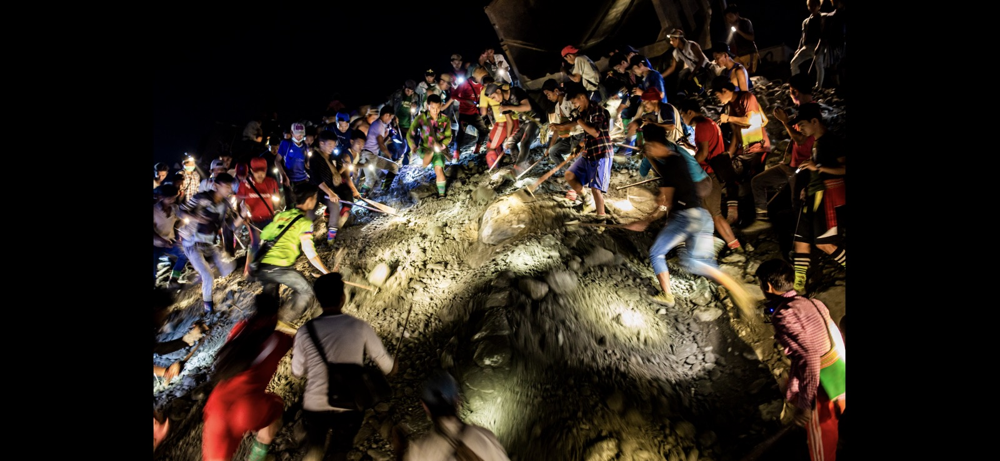

Fighting for Profits From the “Stone of Heaven”
For centuries, jade has been treasured in China as the “stone of heaven”, a symbol of nobility, protection and good fortune. Most of the world’s finest jade – including the vivid green stone known as imperial jade – comes from one place: Hpakant, in northern Myanmar’s Kachin State. Every year, stones worth billions of dollars move from these mines toward China. The money enriches mining firms, traders and investors, but also the armed actors who control the extraction sites, nearby roads and border crossings. Since Myanmar’s 2021 coup, fighting has intensified around Hpakant as the military and its opponents vie for control over one of the country’s most lucrative industries.

The 1994 ceasefire between the Myanmar military and the Kachin Independence Organisation (KIO), one of the country’s oldest ethnic armed groups, transformed jade mining at Hpakant from artisanal to industrial. Satellite imagery from 2000 onward shows the scale of the transformation. The mines attracted hundreds of thousands of migrant workers from across the country, many hoping to find a life-changing stone among the waste piles.
But the boom came at immense human and environmental cost. Drug addiction among workers became widespread. Landslides repeatedly killed scores of itinerant miners and industrial extraction literally moved mountains, turning large parts of Hpakant into a dusty wasteland. Meanwhile, military and KIO officials – and their business partners – grew rich from the proceeds.
As China’s economy grew through the 2000s and 2010s, so did the profits from jade. But official figures capture only a small part of the trade. The best stones often bypassed formal gem sales and moved across the Chinese border through informal networks, with payments made to officials and armed groups along the route. Global Witness estimated the jade industry to be worth up to $31 billion in 2014 – roughly half of Myanmar’s official GDP. Mining continued despite the collapse of the Kachin ceasefire in 2011, with the military, the KIO and other ethnic armed groups all profiting from the trade. The bigger shock appears to have come from Chinese President Xi Jinping’s anti-corruption campaign from late 2012, which made conspicuous luxury purchases riskier in China. Although revenues have almost certainly fallen from the 2014 peak, the industry is still worth billions of dollars a year.
The 2021 coup brought an uptick in conflict in Kachin State. The KIO has not just been one of the military regime’s most formidable opponents, but also provided training and support to newly formed People’s Defence Forces, resistance groups fighting to overthrow the junta. For the first few years after the coup, the military retained direct control over the jade mines. But in March 2024, the KIO launched a major offensive, capturing large stretches of the Chinese border, including trade gates and rare earth mining sites. These gains shifted control over some of Kachin State’s most profitable and strategic locations – and set the stage for renewed fighting around Hpakant, which until then was mainly under military control.
Control of Hpakant’s jade economy has become one of the major stakes in the Kachin conflict. From early 2024, fighting around Hpakant intensified as the KIO and allied forces pushed into areas linked to the jade economy. The military later counterattacked, seeking to regain roads, towns and mining zones central to the trade. Locals have accused both sides of forcibly recruiting fighters from among the area’s large migrant worker population.
Hpakant is now divided between the KIO and the military, with a contested zone in between. Areas that have come under KIO control since the coup have seen a major influx of Chinese companies, many of them linked to the United Wa State Army, a powerful ethnic armed group close to Beijing. Smaller miners say they have largely been pushed out as a result. “The fighting is still going on but it’s hard to tell who’s winning. There are clashes almost every day and night. Some civilians have been displaced two or three times”, said a volunteer from a local community group.
The fighting has not stopped mining activities – but it has changed who taxes them. As one trader told Crisis Group, “No matter how fierce the fighting gets between the armed groups, they seem to avoid hitting the actual jade mining areas as much as possible”. Satellite imagery suggests the overall footprint of the mining area has not expanded dramatically, but the landscape is still changing, with tailings dams being filled in and massive new piles of mine waste, pointing to recent activity.
Control matters because the armed group in charge of the mining area gets as much as one-third of the profits – what’s known as the “landowner’s share” – with the rest split between the mine operator and the company that supplies the mining equipment. Some of the profits go to funding the KIO’s war effort, while in military-controlled zones it typically ends up in the hands of local commanders, with a share of the profits passed upwards to senior officers. “The military and KIO are fighting because they want the ‘landowner’s share’”, a Hpakant local summed up.
While mining goes on, the conflict has made life much more perilous for independent miners at Hpakant. Night light data shows a big shift after the 2021 coup from the mines to urban areas. Sources in Hpakant explained that prior to the military takeover, itinerant miners known as yemase would work at night across the mining area, picking over the waste for pieces of jade. They say this is now much more dangerous, so the yemase either work in the dark or stay in town at night.

The conflict has also disrupted the traditional trade routes for moving jade into China. In the past, local traders bought stones at the mines in Hpakant and moved them through two main routes: northeast through Kanpiketee in Kachin State, or south through Mandalay – a major market for Chinese buyers – before heading northeast to the border crossing of Muse in Shan State.
Since the coup, major offensives have disrupted both the Kanpiketee and Muse routes. Chinese buyers now go directly to Hpakant, buy stones at the source and pay “carriers” to take them through smaller border crossings at Hpimaw and Pangwa, both now controlled by the KIO. The “carriers” use “jungle routes” – mainly old logging roads through Kachin State’s mountains – to reach the border, paying tolls to both KIO and the Myanmar military along the way.
Jade from Hpakant’s mines has been prized for centuries. But in Myanmar, jade is more than a luxury stone. It is a source of revenue, patronage and firepower – and it drives the fighting that now surrounds the mines.
“Jade is the lifeblood of this war”, said one Hpakant resident. “Jade brings profits, and the profits buy the guns. And those guns just take everything else away from us”.